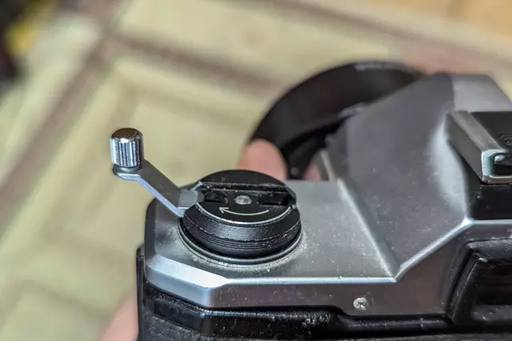

以下 X や他の SNS へのポストに手を加えたものになります。
これカメラの不具合でパトローネの中にフィルムを巻き戻せかなかったのか、それとも巻き戻す必要があるのを理解してなかったのかどっちなのでしょうか？(たぶん画像から判断すると後者だと思うのですが)
ワイのPENTAX17ちゃん、フィルム巻き上げきれなかったんやけど、大丈夫かなぁ（死 pic.twitter.com/X7f0rJo5e8
— 楠井狸一 (@Quthee_614) July 15, 2024
フル・オートのコンパクトカメラしか知らない人は、自分で手でハンドルを回して、フィルムをパトローネに巻き戻さないといけないってことを、知らなさそうです。
フル・オートであってもフィルムカメラを使ってた人は、やっぱり全部わかってるつもりになってしまいがちで、わずか数ページのスターターガイドや、あの短い動画すら見ずに、この痛恨のミスをやってしまいそうです。
フィルム・カメラ使用の最初の勉強代と言えなくはありませんが、昔と違って今はフィルムは非常に高価です。
昔は 400 円もあれば 24 枚撮り ASA 100 のフジカラーが、普通にタバコ屋、文房具屋、駅の売店などで普通に買えたものですが、現在ではフィルム 1 本が 2000 円くらいするので貴重品です。ダメージは大きそうです。
昔のフル・オートのコンデジ (当然現在中古で流通しているものも含め) は、フィルムをカメラに入れて蓋を閉めると、モーターが動いてパトローネからフィルムをギュルーンって巻きだして、レリーズするたびに 1 コマ分を感光させて、パトローネ内に少しずつ巻き戻すって仕組みでした。
フル・オートのコンパクト・カメラはそうなんですけど、PENTAX17 はフル・オートのコンデジと違っていて、いにしえの一眼レフと同じメカニズムで、パトローネから少しずつフィルムを送り出して、レリーズごとに 1 コマ分フィルムを感光させて、向かって右のボックスにあるスプールにフィルムが巻かれて行く仕組みになってます。
なのでフィルムを撮りきったら、下の画像の (画像はPENTAX MX ですけど) 巻き戻しクランプを手でくるくる回して、フィルムを再度パトローネに格納する必要があります。それをせずに裏蓋を開けると、フィルムががっつり露光してしまう事故になります。
フィルム・カメラ・プロジェクトの最初の頃からフィルム送りと巻取りはマニュアルにすると明言されていましたし、このことはわずか数ページしかないスタートアップガイドにも当然書かれています。また YouTube のわずか数分の短い動画でも説明されてます。
せっかく撮ったものをきちんと残すためにも、ざっとでいいのでそういったものには目を通しておきましょう。デジタルと違ってページ数なんてほんのわずかです。覚えることもほんの僅かです。
あとうっかりフィルムをパトローネ内に巻き戻してない状態で裏蓋を開けちゃった場合ですが、まぁ眼の前にビローンと広がってるフィルムのコマは感光して恐らく駄目になっちゃってますけど、まだパトローネ内に格納されてる部分や、右手のスプールの芯に近い部分は、撮ったものが生き残ってる可能性があります。
すぐに裏蓋を閉めて、パトローネ内にフィルムを巻き取ってしまいましょう。生き残ってるコマがあるかどうかは、現像してのお楽しみ (？) です。ていうかどうか撮ったコマをすぐに諦めないで。
そんな人はそうそういないと思いますけど (悲しいかな現在の X には人の失敗を嘲笑したい情けない人ばかり残っていますけど)、うっかり裏蓋を開けて感光させちゃった人を笑ったりするのはやめたほうがいいです。
というのはフィルムカメラを使ってた人のかなりの人が、同じことをカメラを初めて持った最初の頃にやってるはずですし、随分慣れてからでも「さて、明日撮影だしフィルム入れるかぁ」と裏蓋を開けたら撮影途中のフィルムが入ってて感光させてしまった、なんて経験を誰しもしているはずです。ないとは言わせませんw
だれもがやっちゃうことを、人がやってるのを見て笑うのはお勧めしません。人格が問われますし、非常にみっともないです。